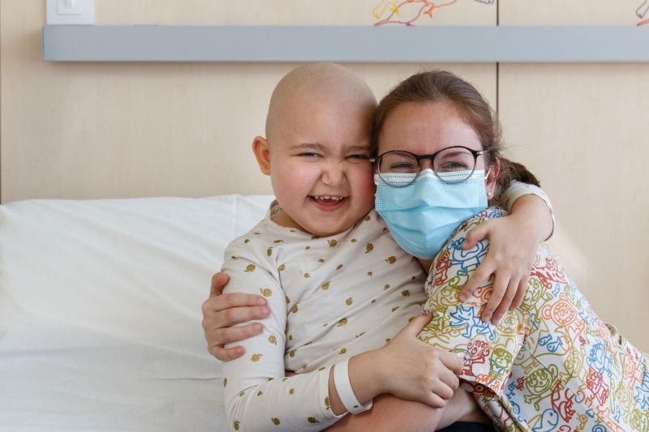
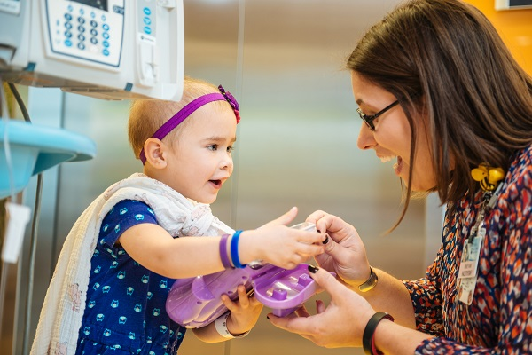
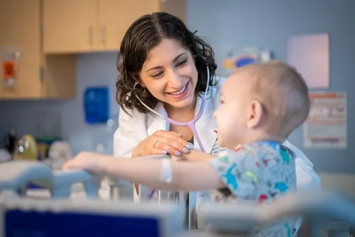

¿Quiénes somos?
Somos una iniciativa solidaria nacida en el corazón del Pediatric Cancer Center Barcelona del Hospital Sant Joan de Déu. Nuestro propósito es acompañar, informar y apoyar a las familias de niños y niñas diagnosticados con cáncer. En un momento tan delicado, queremos ser ese faro que guía, orienta y alumbra el camino. Nos mueve el compromiso con el bienestar emocional y social de cada familia, desde el primer ingreso hasta todo el proceso hospitalario.
¿Qué hacemos?
En F.A.R.O trabajamos cada día para mejorar la experiencia de las familias durante su estancia hospitalaria: Acompañamiento emocional y social durante el ingreso y tratamiento. Información clara y accesible sobre sus derechos, ayudas y prestaciones. Actividades recreativas fuera del hospital para niños, adolescentes y sus familias. Campañas solidarias con material benéfico como totebags y gorros
Misión de F.A.R.O
En los momentos más oscuros, un faro permanece encendido: firme, constante, y lleno de esperanza. Así queremos ser en F.A.R.O: una luz que guía, orienta y acompaña a las familias que atraviesan la difícil experiencia de la hospitalización de un hijo o hija debido al cáncer. Sabemos que este camino es uno de los más duros que puede vivir una familia. Por esta razón nuestro compromiso es ofrecer apoyo, comprensión y calidez humana dentro del Pediatric Cancer Center Barcelona. Queremos ser ese punto de referencia, un espacio seguro donde nunca falte la luz del acompañamiento y la esperanza.